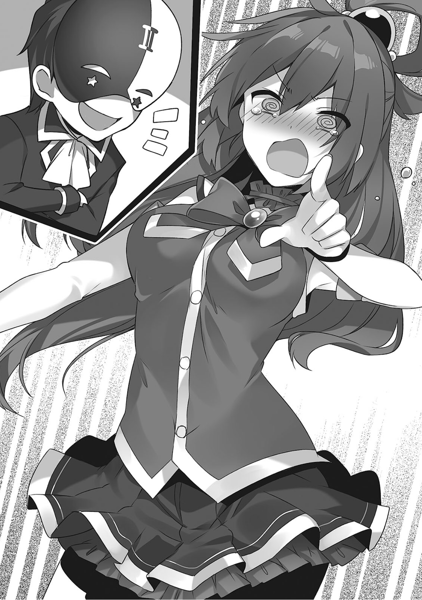
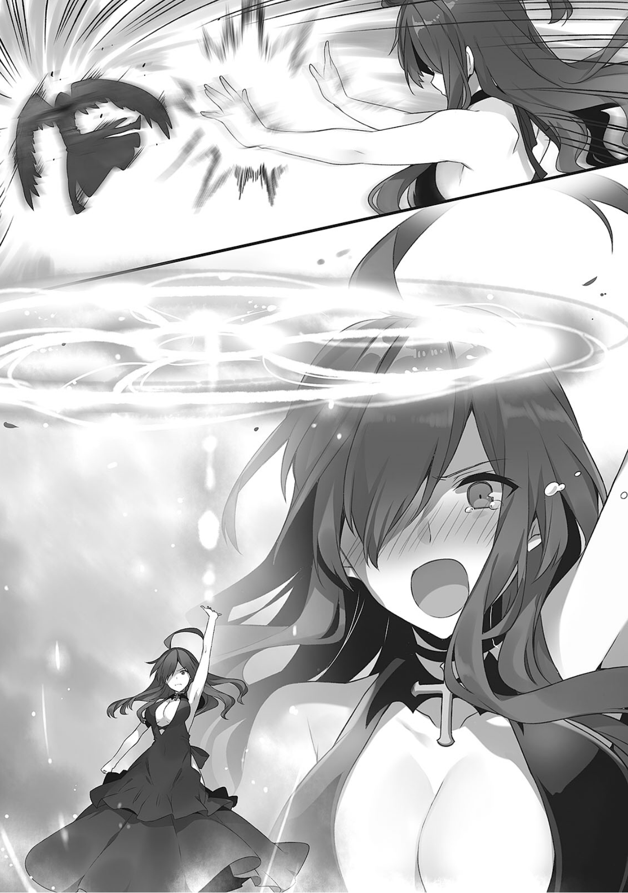

最终章 为巫妖献上真挚的爱！
1
阿库娅夜不归宿了。
「那个叫杜克的人真有意思。着实让我尽兴了一把」
回来后第一句话就是这个。
「哇啊，阿库娅，阿库娅登上大人的阶梯……」
「不对呀惠惠，阿库娅原本就是成熟的女性啦……」
我无视用畏惧的眼神看着她的两人，问起昨晚的事。
「昨晚发生了什么？因为不知不觉中途就变成了宴会，我就只好先回家了。而你居然夜不归宿，难不成你……？发生了成人的关系吧？」
「事到如今你说啥呢？我可是如假包换的成熟女性。肯定会玩些成人的游戏啦」
不会吧！
「我玩了在碗里摇骰子比点数的游戏。输了个彻底。还玩了不知道叫什么名字的卡牌游戏。不过全输了」
不会吧。
「顺带，我没带钱，所以赌输了就用身体偿还啦」
「不会吧！！」
她看着禁不住大叫出来的我说到。
「比起身体该说是脑袋吧，我是用告诉他有趣的情报来把欠债一笔勾销就是了」
「你，你……」
阿库娅伸出右手，
「比如可以吃的贝类，能吸出香甜的蜜的花的知识等等，我告诉他了各种各样的事情，不过还是不够。和真老大，毕竟是必要经费，你帮我出输掉的钱吧」
「你别说那种容易让人误解的花了，差点没把我吓死」
我递出装着厄里斯金币的小袋，阿库娅高兴地收下。
「……那是偿还你欠债的钱。你可别又想着再赌一波把输的赢回来啊」
「…………我说和真，赌博这事呢，是风水轮流转的。我都已经输了这么多了。也就是我是不可能再输的了。所以，你就放心给我吧」
「好，把那钱还给我。我去交给杜克」
我和阿库娅为了抢夺钱袋扭打起来。
「那么阿库娅，那个叫杜克的男人怎么样？感觉已经和诚实，专一的形象相去甚远了」
「怎么说呢，我觉得他是个能认清真正的女性的成熟男人。虽然对我来说不过尔尔，但是维斯还小，似乎对她负担有些过重了。不过，毕竟他讨厌巫妖和恶魔嘛，我觉得他性子不坏的」
「不，既然他讨厌巫妖，那就已经很奇怪了吧。这没问题吗」
阿库娅扑哧一笑——
「没事的，虽说维斯确实是巫妖，可是她十分干净，没有腐烂的味道，这点小事不用在意！」
「不知道为什么，和真，阿库娅一这么赞赏那个男人，我就觉得他很可疑了……」
真巧，我也觉得。
「话是这么说，我们也只是擅自调查他是个怎么样的男人而已。具体怎么做，还得维斯自己选择。还有，阿库娅也不过是被搭讪，一起去喝酒而已。我也经常和认识的女冒险者一起去喝酒，没什么大不了的，也不能说是就实诚或是吊儿郎当」
「我倒是觉得那又不实诚又吊儿郎当……」
惠惠不爽地看着我，我不由得缩了缩身子。
「其实我昨天跟杜克说我是维斯的熟人，他有话托我捎给维斯。没事的，讨厌恶魔的人都不是坏人！好啦，我们去魔道具店吧」
莫名兴奋的阿库娅高声宣言。
2
我们打开魔道具店的门，不知为何，一只布偶装正看着收款台。
「<究极神圣驱魔（Sacred·Highness·Exoricm）>——！」
「噫呀呀呀呀呀呀呀呀呀！」
「你别每次都把赛列希尔德给净化了！给他复活也是很麻烦的！」
看到他一遇上阿库娅就被净化掉，巴尼尔愤怒地说道。
看来阿库娅很喜欢消灭布偶装。
「现在这种事都无所谓啦！我有话带给维斯，让她出来！」
「维斯她在店的后花园和花说着话呢。说实话，看着就恶心，真希望她早点了结掉这事儿，让吾辈轻松些」
巴尼尔一边复活着布偶装，一边指着店的后面。
阿库娅紧紧攥着像是信一样的东西，小跑着朝那边冲了过去。
「我说巴尼尔。你看透了那个叫杜克的男人是吧？为什么你那时候要称赞他呢？虽然我之前觉得他十分男子汉，可他说讨厌恶魔和巫妖来着，你怎么看？」
「事先把答案说出来还有什么意思？哈哈哈哈哈哈哈，吾辈是不会说谎的。正如吾辈之前所说，花痴店主回应那个心意的时候，能享受前所未有的欢喜与幸福之人便会诞生。这点是不会错的。恶魔是不会说谎的，你就好好期待吧！」
巴尼尔不知为何喜滋滋的，这让我一下子多了不少不祥的预感。
这个叫杜克的男人，被阿库娅称赞，被恶魔赞许。
我对此很不理解。
这时，布偶装苏醒过来，变得圆滚滚，惠惠兴致勃勃地看着他。
「话说那只企鹅怎么在看店？他在这里干活了？」
「哎，毕竟原本就很没用的店主变得更加派不上用场了。那就让看起来有些可爱的赛列希尔德看店了……唉，一看就知道派不上用场就是了」
听到巴尼尔的话，他不解地歪起了脑袋。
「说来还没向你报上名字呢……吾名惠惠！乃阿克塞尔第一的魔法使，使用爆裂魔法之人！你可小心别被阿库娅净化太多，导致体内空空如也哦」
「你好，红魔族的小姐，我是赛列希尔德。你似乎是这家店的常客，请多关照了」
惠惠和布偶装那小小的翅膀握了握手，露出了有些不高兴的表情。
「我叫惠惠。要称呼我的话，就不要叫我『红魔族的小姐』，好好叫我的大名。如果你敌我帅气的名字有什么意见的话不妨说来听听啊？」
「不，不，倒不是这个……对我们恶魔族来说，名字是很重要的，我们只会对认同的对手用名字相称……」
对名字十分敏感的惠惠朝着布偶装贴近了脸——
「可你不是认真地用达斯提尼斯卿来称呼我家达克尼斯来着吗？」
「那，那个嘛，毕竟我承认达斯提尼斯卿是个出色的贵族大小姐，才会用大名称呼她……」
被布偶装用名字称呼的达克尼斯喜形于色，而带着维斯回来的阿库娅则是无力地说道。
「我回来了—……」
不知为何阿库娅的脸上带着些疲惫。
而维斯则是。
「喔，和真先生，欢迎光临」
露出了有些无精打采，可是又有些开心的奇妙表情。
「——我自那之后认真想了想。是该回应杜克先生的心意呢，还是该为了实现巴尼尔先生的愿望，在这里努力经营……」
「吾辈也说过很多次了，你出嫁的话店的经营才有起色」
维斯对巴尼尔的话充耳不闻，眼角泛出了泪水，仿佛悲剧的女主角一般，用夸张的动作哀叹道。
「啊，明明我只是默默地经营着小店，为何突然会变成这样呢。阿库娅大人，我到底该怎么办？的确，巴尼尔先生是需要我。可是……」
「吾辈需要的是你的魔法不是你的经营能力」
维斯再次把巴尼尔的话当作耳边风，她望着窗外的景色，手紧紧地贴在窗玻璃上。
「可是！杜克先生则不是『需要我』，而是『非我不可』。他可是都说到除了我之外不做他想的地步了」
「不对，我记得他没说到这种地步」
「他这么说了！我该怎么办呀阿库娅大人，我该选择那一条路啊……？」
维斯也完全无视了我的吐槽，她搂住有些疲软的阿库娅。
「呃，他看上去是个很好的人，我觉得他，大概挺赞的」
「是吗！他在阿库娅大人看来也不错呀！这样的人，我……」
维斯一边说着一边嘿嘿嘿地露出奇怪的笑容。
「我说，维斯怎么了？你给她吃了什么奇怪的东西吧」
「居然还把锅甩给吾辈？吾辈最近十分担心现在的店主这惨样，开始给她吃点像样的东西了。结果……不知为何那个神经店主开始误会吾辈是为了把她留在这家店里，才对她比平时都要好的」
你也真是不容易。
「原来如此，放着不管就变成这副德性了啊」
「就是如此。现在她就每天都发花痴。虽说她这么一来就不会进一些奇怪的东西，不会妨碍做生意了……可对恶魔来说，精神攻击可是比一般的魔法来的有效啊……」
而当事人维斯则是不顾我们说的话，带着『快来搭理我呀』的意味偷偷看着比尼尔
明明是个恶魔，巴尼尔却十分有人味地深深叹了口气——他对有些飘飘然的维斯说。
「发情店主啊，汝收到了叫汝出去的信件吧？赶紧去把事解决掉吧。然后变回平常的汝达成和吾辈的契约吧！」
维斯闻言。
「……也就是说，你想要让不断搞出赤字的我继续做店主吗？」
「明明就算吾辈叫你让出位置你也不肯让」
巴尼尔扭着嘴角不开心地说，这是他第一次表达出他的想法。
希望维斯能继续做店主下去。
也就是这么回事吧。
「巴尼尔是傲娇」
「没有性别的恶魔傲什么傲什么娇。别说得这么恶心，好啦，赶紧去吧。吾辈是看穿一切的恶魔。和你相处这么久，吾辈还是能毫不费力地预测出汝会作出什么决定的。虽然吾辈担心汝可能会苦战一番，不过一定能赢。吾辈现在去进货……」
他大概已经知道会发生什么，产生什么结果了吧。
这位自称看穿一切的恶魔，性格别扭的地狱公爵……
「等办完事后，吾辈一定会赶去现场。吾辈可是很中意汝的，今天汝就好好享受吧。还有，最近的大赤字就一笔勾销了。汝可是曾经以人类之身和吾辈五五开的人类。事到如今，汝是不可能输给那种程度的男人的……好了，快去吧！！」
说着，维斯露出了无畏的笑容
「是！」
3
维斯收到的信上写有杜克叫她出来的地方。
那是城外的某个公墓。
不过，在这地方表白未免太没有情调了。
听了巴尼尔那仿佛是打发维斯去决斗的话后，我再次回想起杜克的话。
倒不如说，我最近一直觉得很违和。
该说是拼图没有拼对位置呢，还是说是纽扣扣错了呢。
我记得杜克那个时候是这么说的。
『话已经说够了！冰之魔女，来与我决一胜负吧！』
……快想起来，接下来还有。
『你问我为什么？这不是明摆着的吗！我要向你展现我的力量，然后让你放弃你现在的工作！』
嗯，应该是这种感觉的求婚。
…………求婚？
咦，稍微等下？
这真的是求婚吗？
可是，维斯听到这话惊慌失措，记得她是这么回答的。
『和，和我成家……！？』
……他并没有这么说。
不过是维斯擅自这么理解了而已，杜克一点也没有那个意思。
而最后应该是这样总结的。
『你的工作就由我来继承！来吧，你这……』
然后维斯就传送走了，对决不了了之。
……咦，这很奇怪吧！？
——在我纠结着的时候，我们一起走向指定的地方。
「我说维斯啊。那个叫杜克的人，请我喝酒了」
「咦咦！？怎，怎么回事呀阿库娅大人！？大家不是都说他是个专一诚实的人嘛……！」
这不过是个求婚。
这不过是个表白。
「我那是想试试，他是不是真的是个诚实的人啦。他没能抵抗住魅力十足的我的邀请，和我一起喝到第二天早上。不过你放心，我没被性骚扰，岂止如此，我也没感觉到平常和真散发出来的那种邪气」
「是，是吗……不过，我已经决定好答案了，没关系，阿库娅大人」
可我很在意巴尼尔的态度。
记得他是这么说的。
『你在回应那位男人的心意之时，能享受前所未有的欢喜与幸福之人便会诞生！』
……一般来想，这都是说维斯和杜克会变得幸福吧？
可是那个恶魔，真的会提出正儿八经的让人幸福的建议吗。
「是吗？虽说他没法抵抗我的魅力，这也没办法，不过他可是郑重拒绝了色情尼斯那淫邪的色诱。在这点上，他可是十分实诚吧」
「是，是吗……」
「喂阿库娅，你能别总是拿我当开涮吗！」
我正沉思着，惠惠捅了捅我后背。
「你到底怎么啦？走出店门后，就一直像是有什么心事」
「……不，不知道为何我有非常不好的预感……甚至还有可能出现腥风血雨，但愿是我想太多吧」
惠惠笑嘻嘻着，像是在说『你想太多啦』。
「没问题啦。虽然我不知道那个叫杜克的有多强，然而我们不是什么牛鬼蛇神都能打倒嘛。而且，这回有着犯规级别的力量的巫妖维斯也在。再说了……」
她为了消除我的不安露出微笑。
「再说不管遇到怎样的敌人，我都能用爆裂魔法轰散它们守护你。所以你就放心吧」
「噢，好……」
她能这么说我是很高兴啦，不过这和我心中的不安有些不一样——
4
离阿克塞尔城有段距离的公墓。
回想起来，这里是我们第一次遇到维斯的地方。
这么一想，倒也不能说是没有情调……
「不，果然还是没有」
「你突然说些什么呢？」
我们来到碰头的地方，杜克的身影已经在那边了。
他那披着旧长袍和披风的打扮，不管怎么样看，都不是来求婚的样子。
杜克看着和维斯一起来的我们，吃惊地瞪大了眼睛。
「先不管佐藤和真怎么在这，其他也有我认识的面孔。达斯提尼斯家的女孩……这不是和我一起讨论缪露缪露贝到早上的心灵之友嘛……」
缪露缪露贝到底是什么啊。
而且心灵之友又是什么鬼，你们关系变得这么好了？
杜克虽然用和善的目光看着阿库娅，但他又马上重新看向维斯。
和身穿长袍的杜克不同，维斯今天穿着之前的盛装。
「虽然我不打算对别人的穿着指手画脚，不过你穿成这样没问题？」
「很抱歉我不是很懂这方面的礼仪，但可好歹是我的决胜服装……」
听到维斯这有些不好意思的话，『嗯』杜克点点头。
「失敬。我还以为你是把我看扁了」
「怎，怎么可能！你是第一个让我穿成这样的人……怎么说呢，我不习惯穿成这样，真不好意思……」
维斯缩了缩肩，猫起了背，杜克一瞬间露出了吃惊的表情。
「原来如此。水平尚可的冒险者多少会遇到被人看扁的情况……可你太出名了。一听到冰之魔女的名字，一般的冒险者都会怕得不敢挑战你吧……」

「就，就是如此！真的就是这样！大家都害怕我……！明明我并不是那样……！」
「噢！？是，是吗……虽然不是很清楚，不过你也是不容易……」
维斯这过度沉重的反应让杜克有些不知所措。
我听巴尼尔说过，维斯在冒险者时代太过活跃了，基本上没怎么被搭讪过。
杜克重新振作精神，对维斯露出了无畏的笑容。
「那么，差不多该开始了吧，我不想多说了。还是说，你要和之前一样脚底抹油？」
听到杜克这话，平时总是战战兢兢，给人老实的印象的维斯。
「我不逃。这次我想要认真回应杜克先生的心意」
「好！」
说着，她双手交叉在前，目不转睛、直勾勾地盯着杜克。
「我没有放弃现在的工作的意思。这点我绝对不让步。毕竟……」
维斯有些害羞地说道，
「这是和我一位已经相处已久的奇怪朋友的约定」
她毫无迷茫，斩钉截铁地说道。
闻言，杜克露出了好战的笑容，紧紧地盯着维斯。
「原被称为冰之魔女，领导最强的冒险者队伍的人啊。就算现在成为了不死族，可还是追求魔道极致之人啊。我的名字是杜克。我和你一样是终将穷极魔道的精髓之人。不死族之王，巫妖啊！我向你提出决斗！」
他高声报上名号——
5
「< 地狱火（Inferno）>」
「<冰雪风暴（Freeze·Gust）>」
公墓旁边的开阔空地上，灼热的烈火和纯白的雾大作。
杜克放出的炎魔法和维斯放出的冰冻魔法相互碰撞，严重摧残了周围的土地。
各处都被白霜所盖，大地偶尔被煮得咕嘟咕嘟的。
不得了，这就是真正的魔法战——！
「喂阿库娅。我现在好感动啊。没错，这才是魔幻啊！蔬菜到处飞在田里抓秋刀鱼怪物使用色勾引人——这些都不是！这种真正的魔法才是异世界！」
「你等下和真，你这说法，听起来就像是爆裂魔法不是真正的魔法一样。比起那种平常又不起眼的魔法，爆裂魔法看起来不是更厉害吗」
惠惠从旁给被感动到瑟瑟发抖的我泼冷水。
「像那种不管是强敌还是什么总之就是打一发爽的魔法才不是我想要的魔法战。爆裂魔法没有情调。打得没来没回，不就是个中了就皆大欢喜的轮盘赌嘛」
「你说什么！」
惠惠炸毛了，不过我现在没空管她。
我必须亲眼看完我所想要的幻想战斗才行！
「不愧是冰之魔女！<深红镭射（Crimson·Laser）>！」
「<咒怨晶狱（Cursed·Crystalprison）>！杜克先生，你等一下！求你了，我们谈一谈！」
杜克放出的红色射线，碰上了在维斯前面出现的冰块，光芒消散。
虽然以前去红魔乡的时候我也见过各种上级魔法，不过魔法使之间以决斗的形式互相放魔法，激烈地交锋，果然还是让人热血沸腾。
在展现在眼前这像动画一样的情景中，我突然听到了听过的咏唱，马上制止惠惠。
「你打算做什么！为什么你在重要场合就不能老实点！」
「因为和真你对那种不起眼的魔法展现出比爆裂魔法更多的兴趣！看着和真两眼放光地看着其他魔法使打出的东西，不知为何胸口就痛了起来！明明就连不久前和真要被达克尼斯色诱的时候，我都没这种想法！」
「你吃醋的基准到底在哪里啊！那可是他们俩的决斗，你别去掺和，乖乖看！」
大概她是打算从旁用爆裂魔法抢风头吧。
我连忙抓住两眼放出光芒开始咏唱起魔法的惠惠，把她按到在地。
杜克和维斯一边到处移动，一边以长在周围的树木为盾，互相放魔法。
不，不该说是互相放……
「为什么不认真攻过来！你在小看我吗，<岩浆沼泽（Lava·Swamp）>」
「<冻结（Freeze）>！<火属性抵抗（Fire·Resist）>！好烫烫……！我既不打算打倒你，也不想放弃现在的工作！巫妖很耐魔法，不管什么攻击我都会承受住，直到让你放弃！」
维斯脚下的地面化作了熔岩的沼泽，她用冰冻一瞬间凝固了沼泽，又咏唱起耐火的魔法逃离开。
比起一个劲地连射攻击魔法的杜克，维斯精通所有的魔法。
「我说和真，我身为护教骑士，是不是该制止他们俩的对决比较好。在我看来，维斯对决斗不感兴趣。怎么样，这里就由我来——」
「<束缚（Band）>！你也给我老实点！话说你只是想冲进上级魔法堆里而已吧！」
「啊……在这种情况下也用束缚绑我，你还真是一如既往地擅长拨动我的心弦啊……！」
我用束缚绑住想要掺和决斗的达克尼斯，对维斯叫道。
「维斯，你也差不多该用出真本事了！不然可对不起对方了！」
给我看更加激烈的打斗吧——！
「你这蠢货说什么呢！？别像刚才惠惠和达克尼斯一样捣乱，快去援护维斯啦！」
阿库娅叫喊道，可按我的判断，维斯比对方强。
既然不用担心她会输，那么身为深度游玩了各种游戏的玩家，还是优先把这些景象全部烙印在脑海里……！
「就算你这么说！我又怎么能忍心攻击热情地对我求爱的人……！」
维斯纠结地回话。
就在这时。
到刚才为止都一脸焦急拼命地放着魔法的杜克，露出了像是下定决心的表情，
「你果然是看扁我了！那就让你没法从容不迫吧！尝尝这个怎么样？<神圣庇护（Sanctuary）>！」
说着，一个巨大到能包围着墓地的神圣魔法阵出现了。
「咦咦咦！？好痛痛痛痛痛痛痛！」
维斯没能对突然到来的神圣魔法做出应对，吃下了这一招。
从魔法阵中静静地飘起的光粒子，一碰到维斯的身体便放出光芒。
「神圣魔法？喂阿库娅，大魔法师是没法用神圣魔法的吧？」
「当然的啊？能使用神圣魔法的只有司祭，大司祭和护教骑士而已呀？不过那个人也能用上级魔法啊。为什么连神圣魔法都能用呢」
杜克不顾我们的疑问，他盯着维斯举起了手。
他大概是往魔法阵中注入了魔力，从下刮起的粒子增强了。
「唔唔唔唔……！杜克先生，快想起来！你和我最初相遇的那一天！你突然脱下长袍，仿佛要给我看裸体一般逼近过来……！」
「别说这种会遭人误会的话！这里有无关人士，我不会脱的，那是有理由的！」
我记得阿库娅对维斯使用这个叫<神圣庇护（Sanctuary）>的神圣魔法的时候，应该是能够马上把她给净化掉的。
似乎杜克使用的神圣魔法并没有阿库娅那种程度的力量。
维斯一边忍受着淡淡的光芒，一边继续诉说道。
「杜克先生，我第二次遇见你时，你是对我这么说对吧……『我心里只有你，一直想着你并以此激励着我不断磨练自己！』。还有『你所有的事我都知道！可以说我是这世界上最理解你的人！』……！就算形式有点另类，我还是第一次被人爱得如此深沉……！」
「你到底在说什么！？话说你倒是赶紧用出真本事啊！就算是你，这样下去也会被消灭的！」
杜克露出了不解的表情，但还是劝说着不想反击的维斯。
维斯像是哄着不听话的小孩一般说道。
「事实上，被你说到那种地步，我还是有些开心的。可是不管你怎么说，我也不会放弃现在的工作。而且，我还不是很了解你。所以……」
维斯一边忍受着淡淡的光芒，一边和善又害羞地说道。
「能不能先从朋友做起呢……？」
鸦雀无声。
杜克露出石乐志的表情。
「太好了！说得好维斯！也对，一开始就结婚也太快了！」
「……啊？」
听到阿库娅那欢实的话语，杜克发出了干巴巴的声音。
似乎他也因此而泄了气，覆盖着墓地的魔法阵失去了力量，消失了。
「哎，这大概就是最好的解决方法吧……你是叫杜克吧。不久前那次，怎么说呢，那次搭讪是用着试探你的名目的。你可不要把我当成随便的女人啊。不过真好，你也不用一下子就被甩了」
「…………啊？」
达克尼斯笑着说道，杜克再次发出了困惑的声音。
「我觉得维斯是个很努力的人啊？你是叫杜克来着。你就放心吧，维斯已经不做不动产商的除灵打工了，她也不再负责抚慰这个墓地的幽灵。所以你不用多担心她」
「………………啊？」
惠惠苦笑着说道，杜克则是露出一副『这帮人在说啥』的眼神……
「你们刚才就说些什么朋友啊结婚啊不用担心啊什么的，都是什么啊？我完全搞不懂你们在说啥」
杜克的脸上露出了不解和疑问，已经到了混乱至极的地步了。
「你说什么呢？维斯是这么个意思。没法马上辞职结婚，不过可以先从朋友做起。不错嘛，甩是被甩了，可还有希望呀」
听到阿库娅的这句话，杜克一开始没能明白其中含义，但他渐渐开始发抖……！
「你，你们说什么傻话！为什么我非得和不死族巫妖结婚不可！为什么会变成这样啊！而且还做朋友！？这是开的哪门子玩笑！」
「咦咦！？」
听到杜克的话维斯吃惊地叫出了声来，阿库娅她们的脸色也刷地变了。
「我说你，就算是被甩了，也不能这么说吧！？你还是操之过急了！突然就结婚肯定是不可能的啊！？你就忍耐下，从朋友做起吧！」
「为什么你们都觉得我对这个女人抱有好意啊！你们脑子没问题吧！？我才第三次见这个女人啊！？」
杜克激动地说道，惠惠嘲笑道。
「你都还跟踪维斯了，事到如今有什么好说的！而且，你不是叫维斯辞去魔道具店的工作，和你成家的吗！」
「什么？」
杜克抬头望天想了想，接着用双手盖住了脸
「……我是叫那个女人别做魔王军的干部了」
「…………啊？」
面对惠惠疑问的声音，杜克用蚊子般细小的声音说道——
「我说的是魔王军干部的工作，和魔道具店没有关系……」
杜克用露出了一副筋疲力尽的表情，他掀开披风脱起衣服。
除了我和阿库娅以外的人都移开了目光，而维斯突然叫了起来。
「啊！？那，那是魔王军的……！」
接着我们看到杜克的胸口部分，纹着没见过的纹章。
维斯是对那表示吃惊，可我们的眼睛去看向了别处。
「啊！我说你——你是堕天使啊！？亏我还以为你是个现今少见的讨厌恶魔和不死族的好人，没想到你是忏逆神明的愚蠢之人！」
「烦，烦死了！你才是，亏我还以为你是个和我情投意合，一同觉得不死族和恶魔愚蠢，还一起背后说女神厄里斯坏话的同伴，结果你那打扮是怎么回事！你是圣职者吗！？」
杜克那光着的背上，有着染上漆黑的翅膀。
按照阿库娅的话，他似乎原本是个天使。
他纹在胸上的是魔王军的纹章，也就是这个天使堕天了，现在是魔王军的手下。
阿库娅露出了前所未有的得意表情，对着愤怒的杜克挺起了胸。
「别傻了，你以为我是谁？不管你是堕天使还是什么，快快给我跪下！我的名字是阿库娅！全国有着两千万信徒的，阿库西斯教徒的神体！女神阿库娅本人！」
杜克瞪圆了眼睛……！
「什么嘛，不过是个疯婆娘啊……」
「你给我等下！」
阿库娅几乎哭了出来，可她又猛然意识到了什么，
「话说回来，你可真狡猾！你是因此才能使用神圣魔法的吧！明明忏逆了神明，堕天了，遇上危险了还要借助众神的伟大力量，你难道不觉得羞耻吗—！？」
「烦，烦死了，我们天使被众神使唤来使唤去！作为代价，我稍微用点力量又怎么样！仔细想想我被拖欠着的工资还没到手呢！你们是没办法想象吧，其实女神不管哪个都是……」
正当他说到这里的时候。

「哈哈哈哈哈哈哈哈！哈哈哈哈哈哈哈哈哈！」
传来了邪恶和傲慢并存的，带着鄙视的笑声。
这声音是在墓地里响起来的，他到底是什么时候来的呢？
「欢迎来到这个边境的城市，妄想成为魔王军干部的人啊。原本就可憎的神明的爪牙在堕天之后这残念度可真是更上一层楼啊！」
身穿笔挺的礼服，面具遮脸的高大男人。
看透一切的恶魔和地狱的公爵，大恶魔巴尼尔，站在墓地中一处高处上。
6
「看来给我赶上最美味的部分啦！哎呀哎呀，差点就错过这么一出好戏啦！」
巴尼尔似乎很愉悦。
一出好戏是什么鬼。
他原本应该也是魔王军的干部，是熟人什么的吗？
「……巴尼尔阁下，这是我和维斯的问题。就算您是原魔王军干部，也还请您不要出手」
杜克逐步后退，完全不掩藏自己的警惕。
就在这时。
「……你骗了我是吗？」
维斯看都不看突然闯入的人，她低着头低声说道。
「哪里骗你了。我最开始就是打算收走你魔王军干部的位置。最初见面的时候，我不是脱了衣服吗。那个时候，就是要给你看我胸上的纹章，跟你说明这事」
杜克老实地说道，维斯还是低着头，不抬起脸。
「…………我，我还以为是求婚呢……而且，我活那么久第一次被表白来着……」
「是，是吗，那可真是悲惨。不过，那啥，你误会得也太厉害了。才见过三次面，怎么会突然跟你求婚呢」
很正确。
他说的的确很正确，但是对现在的维斯行不通。
「我我，我可是，相当地苦恼，苦恼了很久，想要暂时不开店了……！可我觉得这样巴尼尔先生就太可怜了，想着果然还是拒绝吧，来到了这里……！玩弄嫁不出去的巫妖的心就这么有趣吗！饶不了你！我还是第一次受到这种屈辱！比我还是人类的时候，和巴尼尔先生起争执，经常被整的时候还要屈辱！我，我还以为是求婚呢，没想到……！」
「——哎哟！——哎哟哟！哈哈！哈哈哈哈哈哈哈哈！！」
巴尼尔不顾激愤的维斯，他发出断断续续的声音，一边跌落在地一边还在笑着，蹲在了地上。不知道是有什么好笑的。
「巴尼尔先生，有这么好笑吗！话说该不会你看穿了这个情况了吧！……啊！这么说来，你说的『看穿一切的恶魔在此宣言！你在回应那位男人的心意之时，能享受前所未有的欢喜与幸福之人便会诞生！』该不会就是这么回事啊？享受前所未有的欢喜与幸福的人，就是吃我的负面感情的巴尼尔先生对不对！！」
「哈哈哈哈哈哈哈哈！哈哈哈哈哈哈哈哈哈！太棒了！这久违的超高等级的负面感情！真是美味！真是美味！！哈哈哈哈哈哈！」
「巴尼尔先生！」
维斯眼泪汪汪地斥责起笑倒在地的巴尼尔。
「呃，关于这个我确实很抱歉啦！不过我也是有理由的！要是你没有住在这座城市的话，我最开始就会把纹章给你看，向你挑战了。这样也就不会产生误会。没错，正因为你不干干部的工作，生活在人类的城市里，才会放任自己变得这么没出息的！」
被杜克倒打一耙，维斯一下子抬起了脸。
「我又不是自己想才成为魔王军的干部的！因为拥有能给魔王先生维持结界的强大魔力的人没别人了，才非要拜托我的！可你竟然还说我没出息……！」
「没出息不是真的吗！现在魔王军的干部数量少了，维持结界已经愈发吃紧了！而且就连和人类的最前线的据点都陷落了，就连长期在暗中进行的那个计划都失败了」
……唔？
「一收集情报，就查到这些全部都和那边那个看起来很弱的男人有关。最开始我还以为是个被哥布林干掉程度的杂兵，麻痹大意后就是这个结果……没错，就是你，佐藤和真」
矛头怎么转向我了。
「在酒馆里遇到你的时候，我记得你说你要支持我吧。你那时是放松了我的警惕，然后现在把巴尼尔阁下也带过来包围我吧。哼哼，真是了不起的策略」
杜克自个儿误会下去了。
不过这也没什么不好的。
我现在应该配合着他说一句『真亏你能察觉到』吗。
「我已经把这事写成报告书发给魔王大人了。这座城市迟早会成为魔王军的最优先攻击目标」
「不会吧」
这人都做了什么。
明明难得各种事都尘埃落定，我的后宫生活终于要开始了……！
完全不懂我内心纠结的杜克露出了挑衅的笑容。
——正当他打算继续说些什么的时候，就被华丽地打飞了。
我还没理解发生了什么——下意识地望向飞出去的杜克。
「咦……」
理应被打飞的的杜克，陷进了一块墓石里面。
杜克蹒跚地站了起来，望向某处。
维斯站在那里，她举起手目不转睛地看着杜克。大概是不经咏唱就放了魔法
「这座城市要变成最优先攻击目标……这里要被攻打？」
听到维斯那不知不觉中变得冰冷的语气，有人攥紧了我衣服的下摆。
转头一看，阿库娅有些害怕地挨着我，从我的背后偷偷看着维斯她们。
「喂，喂和真，这可不太妙吧？我想现在已经不是享受特殊Play的时候了。你能不能把这个束缚给我解开啊」
被束缚绑着的达克尼斯在地上蠕动着，可我现在已经顾不上她了。
我见过一次炸毛的维斯。
「总，总算是有决斗的意愿了吗。不愧是巫妖，居然能无咏唱地放出如此强力的魔法，看来也不是白长那么大岁数——」
在最后那段话说完之前，杜克又被眼看不见的魔力团块再次镶如墓碑中。
明明她都在气头上了还要用年龄来激怒她，那家伙难不成也挺蠢的。
「和真，感觉这剧情有点不对啊。我倒是不反感被我喜欢的人一直紧紧hold住，但我毕竟不是达克尼斯，你还是赶快放开我吧？我打算做好随时都能释放魔法的准备……」
「放开你的话你肯定会不管不顾地抢走人头的吧。没事，变成那样的维斯是很可靠的，你就好好看着吧」
我一边回应惠惠一边静观事态发展。
没错，那是在去阿坎蕾蒂亚时，魔王军干部汉斯把温泉管理人老爷爷吃掉的时候的事了。
记得维斯不攻击魔王军的条件之一就是『魔王军不能对一般人下手』。她手撕了打破约定的汉斯。
正当我紧握双拳期待着接下来将会变得爆燃的剧情时，巴尼尔不知不觉来到我身边。
「小鬼，睁大眼睛看好了，看穿一切的恶魔在此宣言，接下来将会看到最美丽的一幕」
显得异常愉悦的巴尼尔的话让我不禁苦笑。
这家伙，明明总是劝维斯嫁人，现在却将为守护阿克塞尔而与杜克战斗的她说成是『最美丽』的吗。
看来这家伙也和我一样太不率直。
「咕啊啊啊啊啊！地，地狱火——」
「<咒怨晶狱（Cursed·Crystalprison）>」
变得冷酷无比的维斯在杜克放出炽热的业火之前就将它锁入冰牢之中。
只有上半身被冰包围的杜克无法呼吸无法说话，只能面色惨白地反复把被冰包裹的身体撞上地面。
但是冰并没有粉碎，杜克渐渐地失去力气……
「你投降么？」
维斯问道。
她的声音非常平静，甚至让人怀疑在冰里的杜克到底能不能听见……
被冰包围的杜克双眼无神地看着维斯，摇摇晃晃地点了点头。
——被从冰牢中解放出来的杜克无力地瘫倒地面上，不断咳嗽。
阿库娅兴冲冲赶到维斯那边。
「干得好维斯！你为了报被他甩掉的仇把它闭上绝路了！」
「等一下阿库娅大人，我并不是为了泄愤才干出那种事的！」
阿库娅的口无遮拦让维斯泪流满面。
看到她这和往常差不多的状态，我才终于松了口气。
「喂巴尼尔，为什么不早点告诉维斯这是个误会。这样就能在变成大误会之前早早决斗解决了」
「对啊！喂，巴尼尔，就因为你这混蛋我还要被迫勾引那个男人！」
巴尼尔开心地笑着，无视了我和达克尼斯的抱怨。
「才不管那么多。为了品尝到美味的负面感情吾辈什么事都敢做。对，这边这位被你们两个喜欢得不得了开始得意忘形的后宫小鬼被你们抛弃的时候，恐怕吾辈又能享受到绝好的美味吧」
「你，你别啊。求你别搞这种事……等哪天我再去你商店里买点废品不行吗」
巴尼尔对用细小的声音求饶的我露出坏笑。
「而且……事情还没结束」
「……啊？」
我猛地回过神来，看向被维斯解放的杜克……
「那，那家伙到底在干什么！」
趁着我们闲聊的功夫，杜克已经在突然出现的魔法阵上，将黑色的匕首插进了自己胸口。
「他真动手了！快看小鬼！那家伙假装投降，结果用出了魔道的最高奥义之一——启动了成为巫妖的仪式！哈哈哈哈哈，为了得到力量，他不惜成为不受待见，过街喊打的不死族！哈哈哈哈哈实在是太滑稽了！」
这家伙，明明都遇上这种情况了还那么开心吗！
杜克在成为巫妖之前就已经差不多和维斯打个不分上下了，如果变成巫妖的话……
「你太大意了维斯……咕哈……！看，这源源不绝的强大魔力……啊，魔力从被黑色短剑刺中的伤口不断涌出……！我能感受到全身的细胞在一个个死去，变为不死的肉体！我虽然已经堕天，但毕竟是原天使，不到万不得已不想使用这样的手段……来吧，同为不死族，让我们开始漫无止境的战斗吧——！」
如果变成最强的不死族，巫妖的话——！
「<究极神圣驱魔（Sacred·Highness·Exoricm）>」
「咿呀啊啊啊啊啊啊啊啊啊啊」
就会这样。
在他堕落为巫妖的那一瞬间，完全不看气氛的阿库娅马上就甩了他一脸净化魔法。
维斯满脸悲伤地，缓缓走近身体变得透明的杜克并伸出手——
「到，到到底发生了什么……！？我应该是成为了最强的不死族，成为了巫妖，到底是……！」
「都是因为与我扯上关系你变成了这样……至少我要让你走得安详……<接触吸收（Drain·Touch）>！」
被维斯疯狂吸收魔力的杜克变得更加透明了。
「住手，住手！等一下，这是误会，这是误会！」
领悟到自己即将被消灭的杜克开始向我们之中最好骗的维斯求情，将最后的希望寄托在她身上。
「误解？都成了巫妖了，还有什么好误解的？」
维斯语气严肃地回答。看来她也没那么好骗。
「这就是所谓的误会！我，我变成巫妖……并不是想对你复仇，而是想要变成同样不老不死的存在，和你在一起！」
面对着仿佛是刚刚才想出来的脑残借口，那个敦厚的维斯总算是忍不住了——
「怎，怎么会……我，我才不会被你骗呢，你这种花言巧语根本不会……！」
呃，感觉她是中招了？
她的态度让杜克自己都呆了半晌。但杜克马上重新振作起来……
「我，我才没有骗你！我在于你的战斗中发现我其实是爱着你的！我当然不会一下就提出结婚。所以……正如你刚刚说的那样，我们先从朋友做起……！」
「先，先从朋友做起……！」
不好，看来那个视觉系堕天使正好是没有恋爱经验的剩女巫妖的天敌。
就在我烦恼着要不要直接让惠惠给他来一发爆裂魔法的时候。
巴尼尔拼命忍着笑意与期待对维斯宣言……
「容易受骗的老好人店主哟，给个提示。这种跑腿的下等天使族和恶魔一样，是没有所谓的性别的」
听到这句话猛地将杜克推开的维斯高声喊出咒文。
「等……！等……！」
「！」
双眼含泪的维斯释放了爆裂魔法。巴尼尔则笑得上气不接下气，在地上不断翻滚着。
